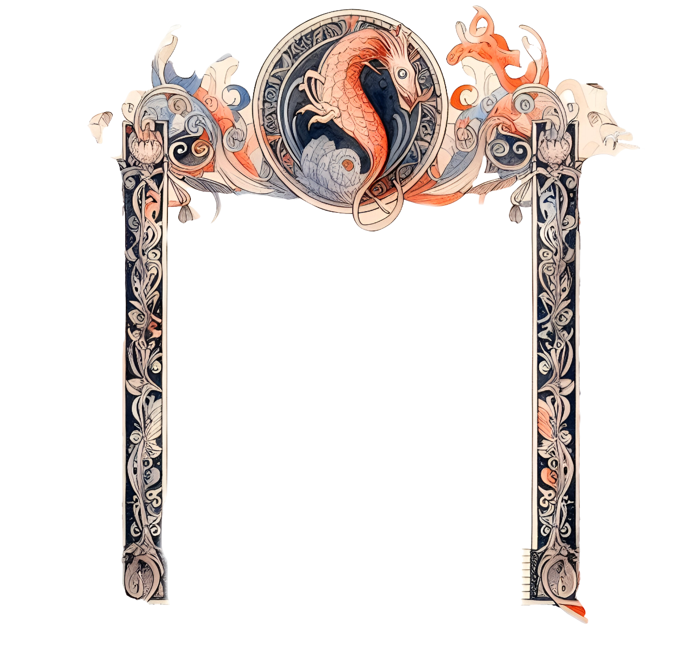
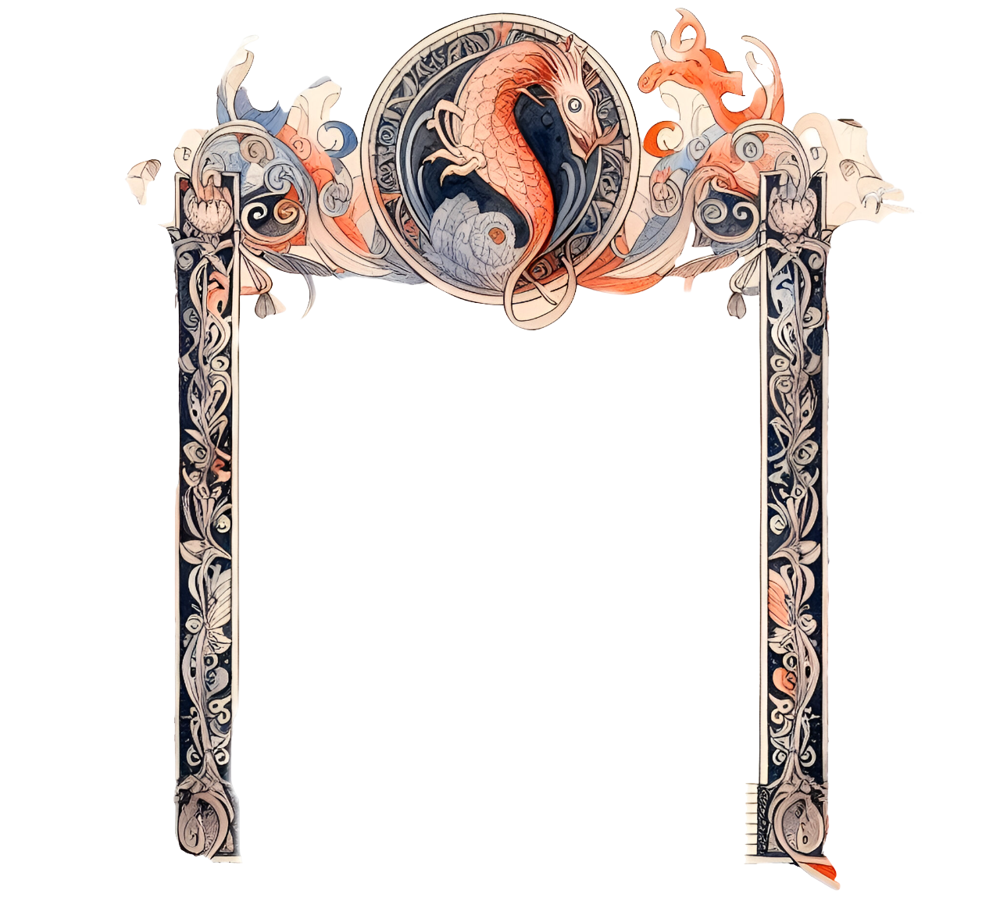

Le tombeau de Couperin

"Le Tombeau de Couperin" es una suite para piano compuesta por Maurice Ravel entre 1914 y 1917. La obra está dedicada a la memoria de amigos del compositor que murieron durante la Primera Guerra Mundial. El título hace referencia a la forma musical del "tombeau", que era una pieza musical compuesta en honor a un difunto.